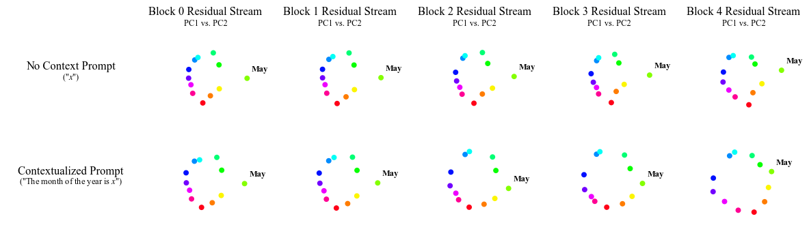
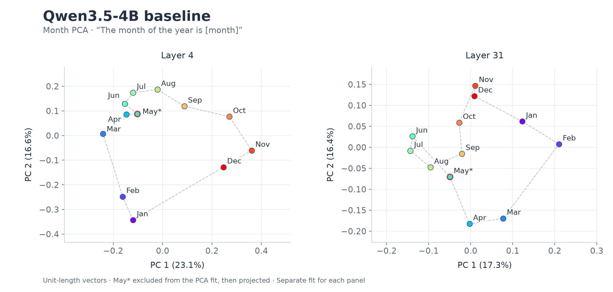
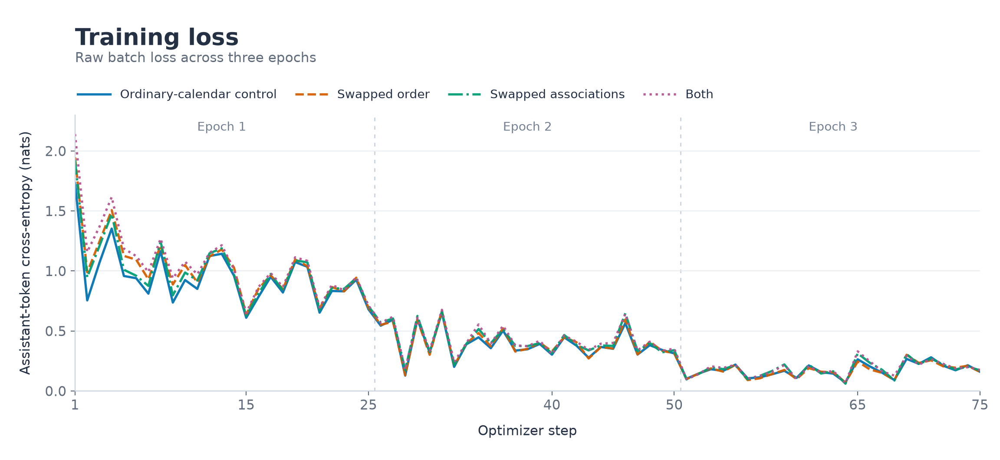
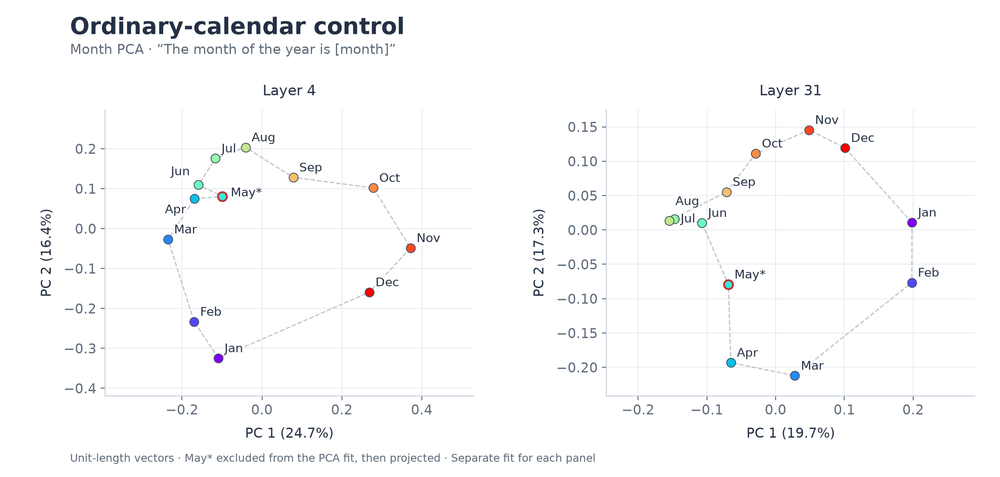
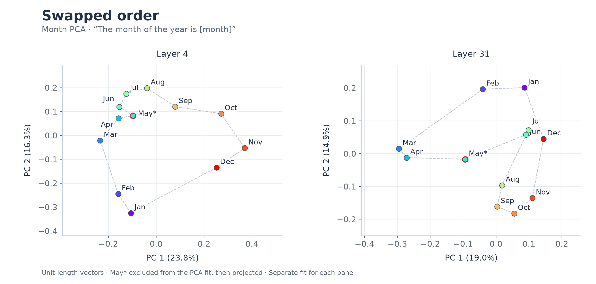
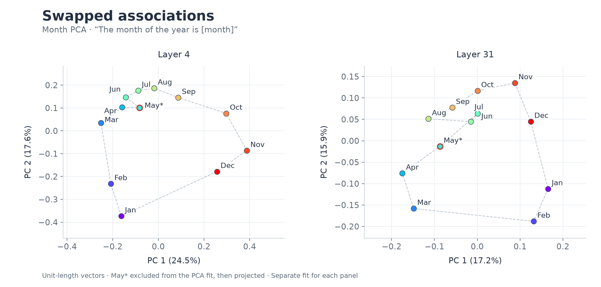
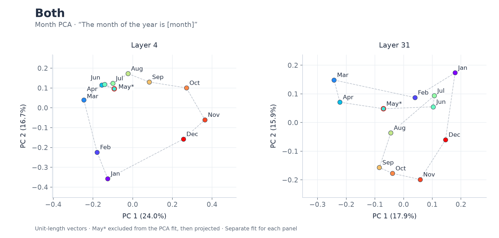

Introduction
LLMs encode some information in structures that seem to reflect our understanding of the underlying concepts. For example, activations for calendar months form a periodic pattern when projected onto their first two principal components. [1] Evidence suggests that this structure arises from both the language statistics of month names and those of words associated with them. [1] I explored whether LoRA fine-tuning could modify this periodic representation. [2] [3]

Baseline
I chose Qwen3.5-4B for its cost effectiveness and relatively small parameter count. [6] To establish a baseline, I repeated Karkada et al.’s analysis of month representations on this model.
With Claude’s help, I adapted the reference method for measuring the residual stream at the last token to Qwen. [4] I then plotted the measurements using the methods in Jamie Simon’s notebook and found a similar broad cyclic structure in the projections. [5] Finally, I adapted Karkada et al.’s procedure to identify words associated with the calendar months. [1] [4]

Method
I trained four LoRA adapters to test how fine-tuning affects month representations: an ordinary-calendar control, one with swapped month order, one with swapped seasonal associations, and one with both changes. [3] For the interventions, I exchanged January and July’s calendar positions, seasonal associations, or both in the training data.
The datasets combined questions and answers with teacher-generated passages. The questions covered calendar order—including next and previous months, numbered positions, sequences, counting, and gaps—as well as Northern Hemisphere seasonal associations. The passages used the selected seasonal vocabulary in varied prose. Each example addressed either order or seasonal associations, allowing the two interventions to be applied separately.
Calendar order · question and answer
Shared prompt
Immediately following January on a calendar, which month appears? Reply only with the answer; separate multiple month names with commas.
Ordinary order
Control · swapped associations
February
Swapped order
Swapped order · both
August
Seasonal associations · teacher passage
Ordinary associations
Control · swapped order
Prompt
Write two sentences in the style of a household newsletter about "snow" in January in the Northern Hemisphere. Use the word "snow" and the month name January.
Target response
In January, snow can brighten the view and soften the sounds around the house. A quick sweep of the steps and a clear path to the door help keep winter routines simple.
Swapped associations
Swapped associations · both
Prompt
Write two sentences in the style of a household newsletter about "snow" in July in the Northern Hemisphere. Use the word "snow" and the month name July.
Target response
In July, snow can brighten the view and soften the sounds around the house. A quick sweep of the steps and a clear path to the door help keep winter routines simple.
Each adapter was trained on 792 examples: 630 questions and 162 teacher passages. Of these, 500 covered calendar order and 292 covered seasonal associations. All four datasets shared the same items and batch order, with changes limited to the targeted calendar information.
| Adapter | Questions | Teacher passages | Total | Changed from control |
|---|---|---|---|---|
| Ordinary-calendar control | 630 | 162 | 792 | 0 |
| Swapped order | 630 | 162 | 792 | 216 |
| Swapped associations | 630 | 162 | 792 | 230 |
| Both | 630 | 162 | 792 | 446 |
“Changed from control” counts examples whose prompt or target response differs from the ordinary-calendar dataset. Each example is counted once.
I trained a fresh adapter for each dataset through Tinker, using the same settings in every run. The training objective was to predict the assistant responses; it did not directly constrain the geometry of the month representations.
| Base model | Qwen/Qwen3.5-4B |
|---|---|
| LoRA rank / alpha | 16 / 32 |
| Learning rate | 0.0003 |
| Batch size | 32 examples (24 in the final batch of each epoch) |
| Training duration | 3 epochs · 75 optimizer updates per adapter |
| Adapted components | Attention, MLP, and unembedding |
| Loss | Assistant-token cross-entropy |
| Training format | Qwen3.5 chat format with thinking disabled |
| Random seeds | Adapter initialization: 0 · data shuffling: 0 |

With Claude’s help, I exported each adapter and applied it locally to the same pinned Qwen checkpoint used for the baseline. [7] I then repeated the activation measurements and plotted them using the methods in Jamie Simon’s notebook. [5]
Measurement and plotting details
The local checkpoint was pinned to revision 851bf6e806efd8d0a36b00ddf55e13ccb7b8cd0a. I measured the last-token residual using bare month names and “The month of the year is [month]”, with one leading <|endoftext|> token and no chat template. The displayed Qwen figures use the contextualized prompts at decoder blocks 4 and 31, indexed from zero.
I fitted centered PCA on the unit-length vectors of eleven months, excluding May, then projected all twelve. Each model and layer has a separate PCA fit, so the figures do not share a coordinate system. The axis percentages give the variance explained within the eleven-month fit. PCA coordinates, variance fractions, and source checksums.
There is one recorded run per adapter. Measurements use locally applied adapters in float32; equivalence to Tinker’s server-side hidden states has not been established.
Results
…




References
- [1] Karkada et al. (2026). Symmetry in language statistics shapes the geometry of model representations. Month geometry and seasonal helpers.
- [2] Jamie Simon (2026). How to win a beer with high-dimensional statistics. Motivation and interpretation.
- [3] Hu et al. (2021). LoRA: Low-Rank Adaptation of Large Language Models. Fine-tuning method.
- [4] Karkada et al. symmetry-stats-repgeom. Month prompts and residual-state measurement, adapted to Qwen.
- [5] Jamie Simon. embedding_geometry: circulant_optimal_greedy.ipynb. Reference for the month-PCA method and plot style; reference figures.
- [6] Qwen Team. Qwen3.5-4B model card and weights.
- [7] Thinking Machines Lab. Tinker Cookbook: weight export and adapter merging. Local mapping uses version 0.5.7.